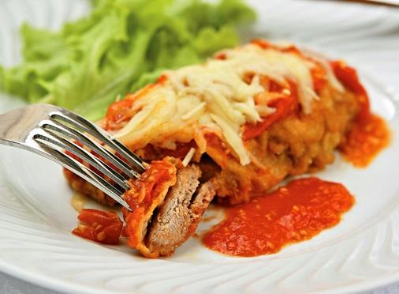

Beef Parmigiana

Description
Traditional brazilian-italian dish served everywhere in the country
Ingredients
- 10 bifes filé mignon
- 1 xícara de farinha de trigo
- 2 ovos
- 1 pitada de sal
- farinha de rosca
- 1 lata de extrato de tomate
- 1 pitadinha de açúcar
- 10 fatias de mussarela
MODO DE PREPARO
para a milanesa
- Corte o filé em bifes não muito finos (por favor não bata) e tempere-os a gosto.
- Passe os bifes na farinha de trigo.
- Bata ligeiramente os ovos (dois ou mais) com uma pitadinha de sal e passe os bifes nessa mistura.
- Passe os bifes na farinha de rosca.
- Faça com que a massa fique bem aderida aos bifes.
- Frite os bifes, deixe-os em papel toalha para que sequem bem e coloque-os em uma forma refratária.
Montagem
- Faça um molho com extrato de tomate e uma pitadinha de açúcar e coloque sobre os filés. O melhor sempre será o seu próprio molho de tomates. Cubra-os com as fatias de mussarela e coloque no forno por aproximadamente 10 minutos.
- Pessoalmente prefiro queijo prato e recomendo polvilhar bastante queijo parmesão ralado, antes de gratinar.
- Para acompanhar batatas fritas bem douradas e arroz branco. Fica uma delícia.
Return Home